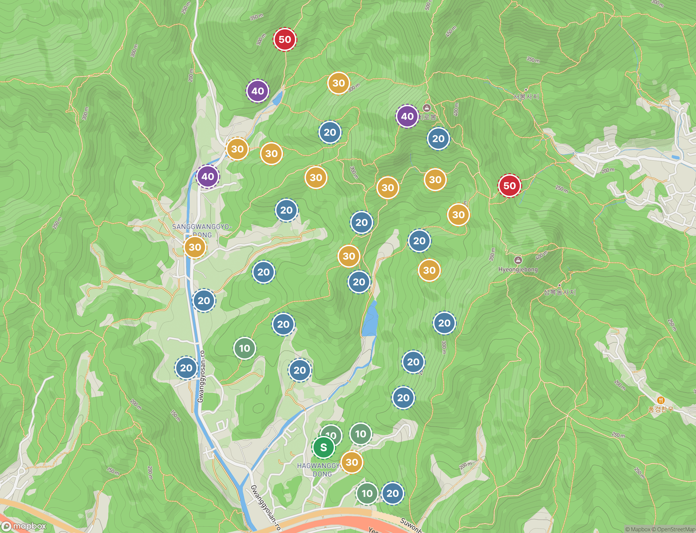
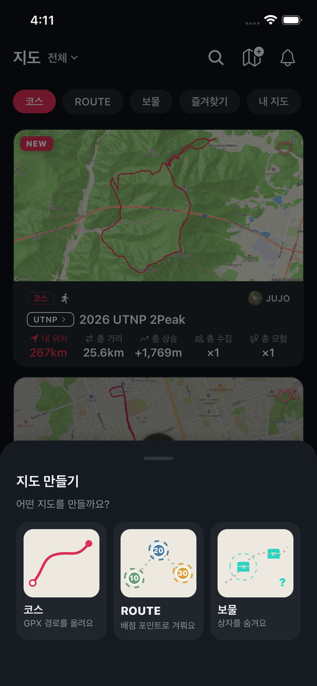
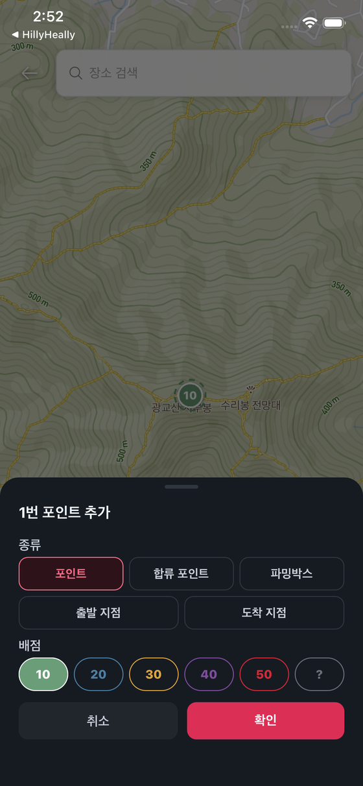
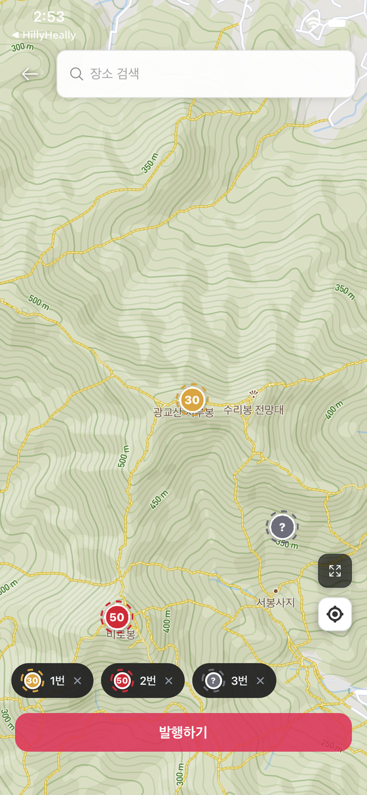
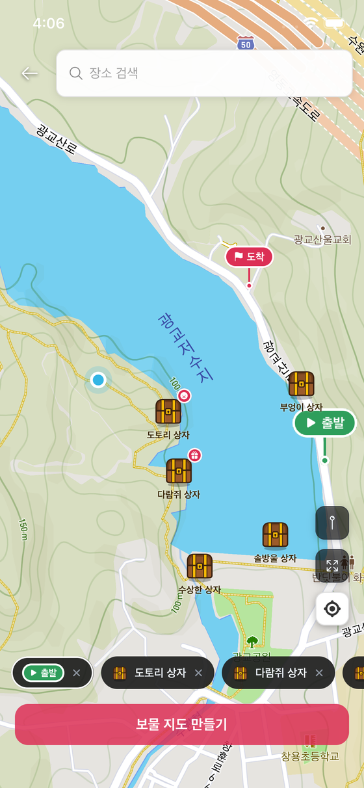
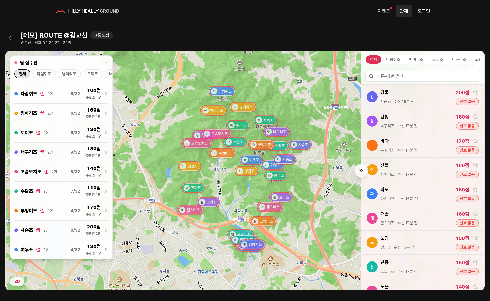

PROGRAM INTRODUCTION
ROUTE와 보물찾기
01 · TWO WAYS
둘은 준비의 무게가 다릅니다. ROUTE는 하루를 들여 차리는 행사이고 보물찾기는 지도만 있으면 그날 바로 열 수 있습니다.
| ROUTE | 보물찾기 | |
|---|---|---|
| 한 줄 | 목표를 정하고 나만의 경로를 찾는 게임 | 지도에 숨겨진 보물을 찾는 게임 |
| 참가자가 하는 일 | 시작 전에 목표 점수를 정하고 그 점수에 맞게 체크포인트를 골라 돌아옵니다 | 길을 걷다가 근처에 숨은 상자를 찾아 엽니다 |
| 지점 | 운영진이 사전 답사로 정한 고정 지점 | 출발할 때 경로 주변에 자동으로 숨겨집니다. 매번 자리가 다릅니다 |
| 인원과 편성 | 2인 1팀, 개인전으로 혼자 뛰어도 됩니다 | 개인 |
| 만들기 | 앱에서 누구나 포인트를 찍어 자기 코스를 만듭니다. 행사용은 저희가 답사해서 짭니다 | 누구나 지도를 고르고 상자 개수와 경품을 정해 바로 엽니다 |
| 준비 | 코스 답사, 체크포인트 지정, 운영본부 | 지도 하나와 상자 개수, 경품 설정 |
| 남는 것 | 팀별 점수와 목표 적중 여부, 이동 기록 | 누가 어느 상자를 열었는지, 걸은 거리와 시간 |
둘을 겹쳐 쓰기도 합니다. 체크포인트로 점수를 쌓으면서 중간에 상자가 하나씩 나오는 식입니다.
01
ROUTE
목표를 정하고 나만의 경로를 찾는 게임
02 · ROUTE
출발 전에 우리 팀이 모을 목표 점수를 정합니다. 부족해도 넘쳐도 안 되고 딱 맞게 채워 도착 지점으로 돌아와야 성공입니다. 어느 포인트를 가고 어느 포인트를 버릴지 고르다 보면 같은 산에서도 팀마다 다른 경로가 나옵니다. 그래서 이름이 ROUTE입니다.
10~50점
포인트마다 붙는 배점
10점 단위
시작 전에 선언하는 목표 점수
±50점
찍어야 알 수 있는 미스터리 포인트
RULE 1
2인 1팀이 기본입니다. 혼자 오시면 개인전으로 뛰시거나 점수 없이 지도만 보며 걸으셔도 됩니다.
RULE 2
출발 전에 몇 점을 모을지 팀이 직접 정합니다. 10점 단위로 선언하고 끝났을 때 그 점수와 딱 맞으면 성공입니다.
RULE 3
출발 체크를 해야 포인트가 열립니다. 그전에는 어디에 몇 점이 있는지 보이지 않아 미리 외워 올 수 없습니다.
RULE 4
포인트 가까이 가면 찍기 버튼이 열립니다. 같은 포인트는 팀마다 한 번만 찍힙니다.
RULE 5
미스터리는 찍기 전까지 점수를 모릅니다. 50점을 얻을 수도 잃을 수도 있습니다. 합류 포인트는 팀원이 모두 모여야 찍힙니다.
RULE 6
남은 점수에 맞춰 마지막에 무엇을 찍을지 고릅니다. 도착 지점에 돌아오면 그 자리에서 끝납니다.
순위표는 만들지 않습니다. 100점마다 추첨권이 한 장 쌓이고 목표를 정확히 맞힌 팀에 두 장이 더 붙습니다. 빠른 사람만 가져가지 않게 두려고 만든 장치입니다.
03 · COURSE
아래는 2026년 11월 광교산에서 쓴 배치입니다. 길마다 거리와 난이도가 달라 배점과 개수는 매번 새로 잡습니다.

광교산 체크포인트 35개소 배치. 초록색 S가 출발과 도착 지점입니다. 점수 표시는 참가자 앱 화면에 뜨는 모양 그대로입니다.
04 · GUIDE FILM
왼쪽은 규칙을 담은 40초 안내 영상이고 오른쪽은 광교저수지에서 실제로 돌린 판을 앱이 남긴 리플레이입니다.
ROUTE 안내 영상, 40초
광교저수지 ROUTE, 앱에서 저장한 리플레이
현장을 담은 촬영본은 따로 있습니다. 외주 없이 직접 찍습니다. 서울레이스 영상팀장을 맡은 감독이 팀에 있어서, 기관에서 쓰실 자료로도 정리해 드릴 수 있습니다.
02
보물찾기
지도에 숨겨진 보물을 찾는 게임
05 · TREASURE HUNT
코스를 따라 그냥 걷습니다. 숨은 상자는 앱이 알아서 알려 주고 가까이 가면 열립니다.
STEP 01 · 숨기기
기본은 출발할 때의 자동 배치입니다. 경로에서 50m 안쪽으로 비껴 놓고 상자끼리 150m 이상 띄워, 자리가 매번 달라집니다. 답사하면서 원하는 자리를 직접 찍어 고정할 수도 있습니다.
STEP 02 · 찾기
100m에서 근처에 있다고 알리고 50m면 아주 가깝다고 합니다. 20m 안에서 지도의 상자를 눌러 엽니다.
STEP 03 · 열기
경품이 든 상자와 꽝이 섞여 있습니다. 경품은 만든 쪽이 직접 겁니다. 스타벅스 아메리카노 한 잔처럼요. 당첨은 명단에 기록되고 수령은 운영에서 확인합니다.
조절할 수 있는 것
상자는 5개, 10개, 15개 가운데 고르고 최대 30개까지 둡니다. 제한시간은 기본 60분이고 10분부터 5시간까지 잡습니다.
막바지 장치
끝나기 10분 전이면 남은 상자의 대략 위치를 반경 80m 원으로 보여 주고 3분 전이면 위치를 공개합니다. 빈손으로 끝나지 않게 하는 장치입니다.
공정
앞사람이 다 열어 버리지 않도록 한 사람이 가져갈 개수를 정할 수 있습니다. 제한 없음도 가능합니다.
꽝 상자도 일부러 섞습니다. 여는 순간의 두근거림이 상품보다 크다는 것이 지난 회차 설문에서 확인됐습니다.
06 · FIELD RESULT
종댕이길 구간에서 하이킹과 함께 앱 보물찾기를 돌렸습니다. 사후 설문 11명 기준입니다.
25 / 27
행사 중 열린 상자
13명
앱으로 함께 걸은 참가자
4.55점
보물찾기 재미 (5점 만점)
4.64점
주변에 추천할 의향
좋았던 점
1위가 상자를 열 때의 두근거림(9명), 2위가 일행과 함께 찾기(6명)였습니다. 상품과 보상은 3명으로 아래쪽이었습니다.
보완한 점
한 줄로 걷는 길에서는 앞사람이 먼저 열게 돼 아쉽다는 의견이 3명 있었습니다. 한 사람당 개수 제한과 개봉 간격을 그래서 넣었습니다.
07 · GUIDE FILM
왼쪽은 규칙을 담은 안내 영상이고 오른쪽은 11월 8일 콤마트레일에서 참가자가 앱으로 저장한 리플레이입니다.
보물찾기 안내 영상, 40초
콤마트레일 보물찾기, 앱에서 저장한 리플레이
행사가 끝난 다음 날 참가자들이 각자 올릴 거리가 생깁니다. 운영하는 쪽에서는 따로 촬영을 붙이지 않아도 그날 기록이 남습니다.
03
COMMON
둘 다 무엇으로 돌리는가
08 · MAP MAKER
운영진 전용 도구가 아닙니다. 오늘 참가자였던 사람이 다음 주에 자기 지도를 열 수 있습니다. 아래는 실제 앱의 만들기 화면입니다.




ROUTE 포인트 종류에는 합류와 파밍박스, 출발과 도착, 미스터리까지 들어 있습니다. 보물 지도는 GPX 경로를 올려 자동으로 숨겨도 되고 이 화면처럼 직접 찍어도 됩니다.
09 · PLATFORM
행사 때만 빌려 쓰는 외부 솔루션과 다릅니다. 평소 서비스 중인 자체 앱과 관제 화면이라 행사 중에는 운영진이 참가자 전원을 실시간으로 지켜보고 끝난 뒤에도 걸은 기록이 참가자 앱에 남습니다.

예시 데이터 32명을 띄운 실제 관제 화면. 2인 1팀 16개 조의 점수와 추첨권, 수신 상태가 한 화면에 모입니다.
참가자 휴대폰 하나면 돌아갑니다. 따로 장비를 나눠 드리거나 받아 오실 것은 없습니다.
10 · FARMING BOX
앱 속 상자와 달리 실제로 여는 보관함입니다. 지도에는 표시하지 않습니다. 하이커박스처럼 길가에 놓여 있고 발견한 사람이 앱에서 비밀번호를 받아 엽니다.
STEP 01
위치를 미리 알려 주지 않습니다. 체크포인트와 달리 지도에 뜨지 않아 걷다가 눈에 들어와야 합니다.
STEP 02
발견하고 앱에서 상자를 확인하면 그 자리에서 번호가 공개됩니다. 앱 속 보물 상자와 같은 방식입니다.
STEP 03
꺼낸 것을 남은 구간에서 바로 쓰거나, 필요한 사람이 보급으로 가져갑니다.
용도 1
과제가 든 상자입니다. 헤드램프 같은 장비를 꺼내 그 자리에서 직접 써 보고 인증 사진을 찍어 올리면 완료되는 식입니다. 상자 안 쓰레기 봉투를 꺼내 다음 구간을 걸으며 쓰레기를 주워 오는 과제도 됩니다. 설명을 듣는 것이 아니라 길 위에서 해 보는 쪽입니다.
용도 2
물과 행동식, 반창고처럼 길에서 떨어지기 쉬운 것을 채워 둡니다. 하이커박스와 같이 필요한 사람이 가져가고 남는 것은 두고 갑니다. 무엇이 얼마나 남았는지는 운영에서 확인합니다.
상자는 일반 이용객이 열 수 없게 잠그고 구조물에 고정한 뒤 위치추적기를 붙입니다. 교육과 보급 말고 다른 용도로는 쓰지 않으며 운영이 끝나면 전량 회수합니다.
HILLY HEALLY
무엇을 제안드리려고 보내는 자료는 아닙니다.
저희가 어떤 프로그램을 돌리고 있는지 한 번 보셨으면 해서 정리했습니다.